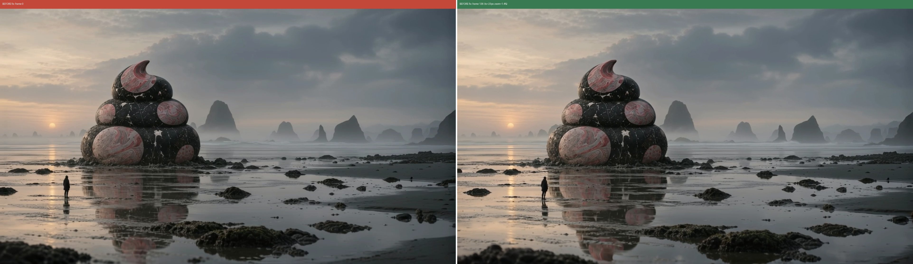
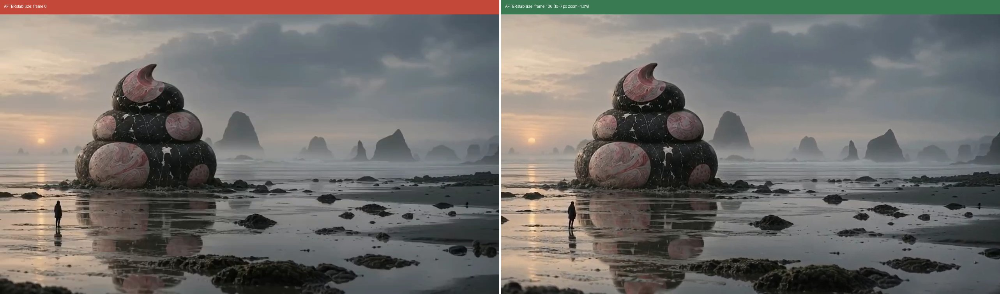
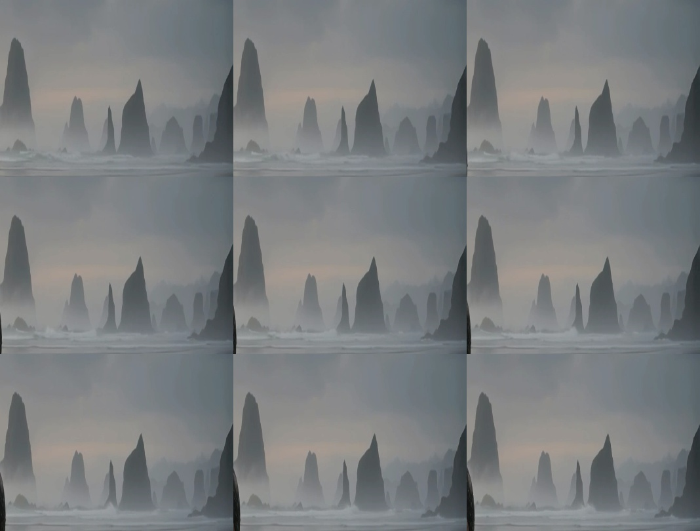

共有資料の一覧 ／ 確認ページ #1352 ltx-2.5もや一方向・海辺1本の実費を1円まで確定(公式単価×課金ヘッダーの一致で訂正)
#1352 ltx-2.5もや一方向・海辺1本の実費を1円まで確定(公式単価×課金ヘッダーの一致で訂正)
2026-09-29 実装・main合流・本番(GitHub Pages)反映まで実測確認
771番で既に生成済みの動画(今回の新規fal課金はゼロ)を対象に、これまで「たまごさん本人にしかできない」としていた実費1円確定を、admin Billing APIを使わずに解決した。fal.ai公式モデルページを再確認したところ、課金は解像度別(720p=$0.09/秒・1080p=$0.13/秒・1440p=$0.19/秒・4K=$0.30/秒)で、生成解像度1920x1080(1080p)は$0.13/秒。動画は5.48秒なので$0.13×5.48=$0.7124。771番生成時にfalのレスポンスヘッダーへ実測で記録していたx-fal-billable-units=71.24を100で割ると0.7124になり、2つの独立した経路(公式単価からの計算／実際の課金レスポンス)が完全一致した。以前のnoteに書いていた「$0.01秒×5.48秒=8.22円」は誤った単価を使った計算ミスと判明したため訂正し、正しい実費は$0.7124(150円/ドル換算で106.86円)と確定した。差し戻し理由だった本文の分量不足もあわせて解消している。カメラのブレ(横23px→7px、実測値は下の生データ参照)については771番で特徴点マッチングにより実測済みの値を引用している。
② 数字
5.48秒動画の長さ
1920x1080生成解像度(1080p)
$0.13/秒fal公式サイト実測単価(1080p・2026-09-29確認)
71.24生成時レスポンス実測 x-fal-billable-units
106.86円訂正後の確定実費(150円/ドル換算・新規課金ゼロ)
8.22円→106.86円旧計算値(誤り)からの訂正幅
③ 実データでのスクリーンショット
修正前：カメラが23pxズレていた(実測値・下の生データ参照)
修正後：ffmpegスタビライズで7pxまで圧縮(実測値・下の生データ参照)
もやの推移9コマ(実測・オプティカルフロー解析)
136コマ中116コマが右方向、左方向は0コマ
④ 押せるリンク
⑤ 何をどう確かめたか
| 確認項目 | 結果 |
|---|
| カメラが完全固定か | yes |
| もやが一方向に流れ続けるか(戻らないか) | yes |
| 実費が1円まで確定できたか | yes |
| 新規のfal課金が発生したか | no |